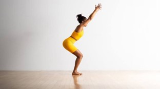
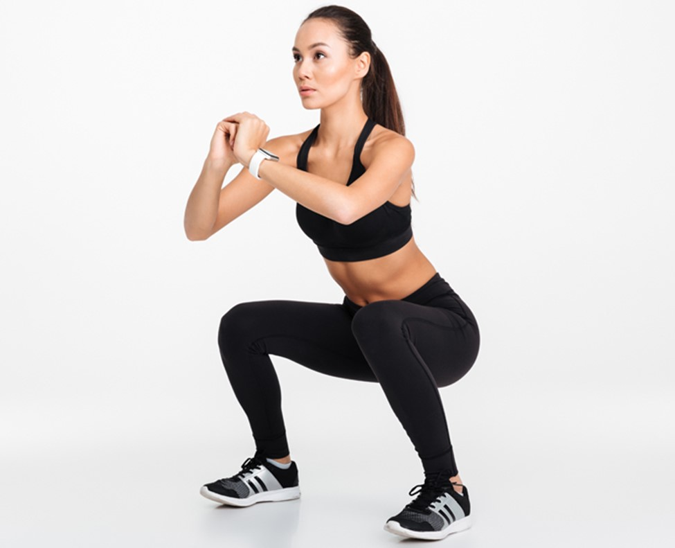

Bokong

Chair Pose
Chair pose merupakan salah satu yoga dasar yang bisa dilakukan oleh siapa saja,

Squat
Squate secara sekilas memiliki gerakan yang hampir mirip dengan chair pose.
Lunges
Walaupun gerakannya terlihat mudah, lunges memiliki beragam manfaat untuk mengencangkan otot tubuh bagian bawah, seperti bokong, paha, dan betis.
Naik Turun Tangga
Latihan ini dapat membantu mengencangkan otot bokong